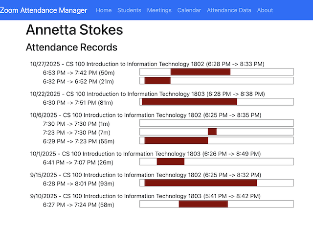

This HTML, 100% JavaScript application organizes the information in dowloaded Zoom Attendance reports. If your account has sufficient priviledges you can download a meeting usage report that includes information on all participants to meetings instances. This Zoom support article describes How to access and generate a meeting usage report.
This application was written for a very specific purpose; to help online instructors manage the attendnace records of students in regular meeting calls. It is base onthe assumption that an instructor has set up one or more recurring meetings in Zoom for class instruction. Over the course of the semester it might be interesting knowing how well individual students have been participating. To find this information from the downloaded spreadheets you'd have to combine monthly sheets, and sort through them based on student, then compare that with the total room time that the host had teh meetin open for. This can be a bit cumbersome, so I decided to write this simple app to do this for me.
The way it works is; you download the attendance reports from your Zoom web portal. This information contains each record of someone joining and leaving a meeting. There may me several records for the student (and host) during the same meeting if breakout rooms are used. The app allows you to upload the spreadhseets downloaded from the Zoom portal and reads the data and organized it in to three primary views; student, meeting instance and calendar. See the feature descriptions below for details.
This application is written in 100% JavaScript and runs in your browser. It does not run on a server, and more importantly the data does not travel over the network. It uses your bowsers local storage capabilities to store the processed data locally so that it will be there the next time you navigate to the app. The downside is that you must use the same browser on the same machine to see the data after you close your browser. If you use a different browser or computer you will have to upload teh data again.
Students menu - Lists all students that have an attendance record. Clicking on the student will show the details of all the attendance records for this student. This information includes the attended meeting, the time they entered and left. Multiple records for the same meeting instance indicates they either left and returned to the meeting, or more likely they used a "breakout" room.
Meetings menu - List all the meeting (not explicitly ignored when you imported the data. Clicking on on of these recurring meetings will display a list of all its instances. The day, date and times along with the duration and number of participants is shown. Clicking on an instance will display a view of all the participants with enter and exit times. Multiple instances of entery and exit time periods indicates the use of a breakout room, or simply leaving and reentring the meeting instance. A grapnhical representation of the time spent in the meeting accompanies each attendance record to give a quick view of when they were present over the course of the meeting instance..
Calendar menu - Displays a monthly calendar view with meeting instances. Clicking on the meeting instance in a date cell will open up the meeting instance view. This view contains the participants enter and exit times with a small graphical visual indicating when they entered and left. The use of breakout rooms are shown with separate attendance records.
This project was created for my own personal use, so I can't promise any support. I will try to do my best to see that it remains working for as long as I can. This is an open source project hosted on GitHub with the MIT license. If you have an issue you can use the GitHub issues system to register an issue or enhancement request. But unfortunately I can't offer any garuantees